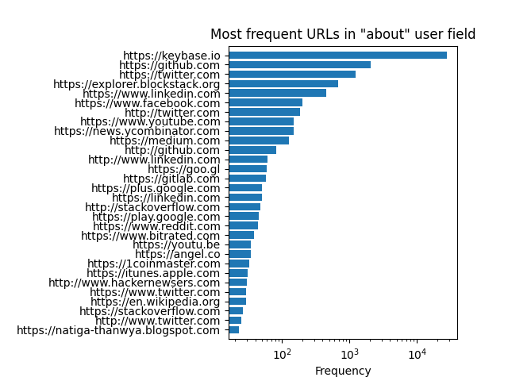

Yet Another Hacker News Data Analysis
|
Introduction
Appendix: Data Analysis Scripts
Where applicable, all content is licensed under a CC0.
Original theme by orderedlist (CC-BY-SA) |

Yet Another Hacker News Data Analysis

Introduction
Here I will do some basic analysis of the data provided by Y-Combinator's social news site, Hacker News (HN). The analysis presented here is a light hearted meandering through different aspects of the HN site data. I've favored an approach that leaves the data interpretation up to the reader and kept my own interpretation to a minimum.
Doing a search for a snapshot of the HN API data provided some options but nothing recent and nothing with user information also present, at least, not that I could find. I decided to scrape what was available from the HN data through their very nice API and do some rudimentary analysis.
To get a copy of the database to play around with yourself, a snapshot has been provided as a SQLite file along with the compressed 'raw' JSON files on Archive.org. The raw data is about 3.6Gb compressed and the SQLite file is 5G compressed and 13G uncompressed.
All source code, unless otherwise stated, as well as text and other data, is provided under a CC0/public domain license. The Hacker News itself is proprietary and so please check with with the Terms of Use. I am, no doubt, violating their terms of use so I'm hoping they won't sue me or take down the data as I'm providing it in the hacker friendly spirit of data sharing and transparency.
There's nothing novel here, aside, maybe, from an easily downloadable database.
That being said, I imagine a lot of people thinking "so what?" and I'd be hard pressed to argue with them.
So what? So what! Why not! Let's take a look at Hacker News data!
Analysis
Overview
First let's get an overview of the data:
sqlite> select count(*) from users;
558905
sqlite> select count(*) from item;
23669105
A breakdown of different types of item data:
sqlite> select count(id), type from item group by type ;
count(id)|type
19882923|comment
13014|job
1788|poll
12164|pollopt
3759216|story
Please note the frequency log-scale.
Different item data, grouped by month, through time:
sqlite> select count(id), type, substr(datetime(time, 'unixepoch', 'localtime'), 0, 8) mo from item group by mo, type order by mo asc;
...
255028|comment|2020-04
52|job|2020-04
2|poll|2020-04
7|pollopt|2020-04
38330|story|2020-04
296004|comment|2020-05
63|job|2020-05
1|poll|2020-05
9|pollopt|2020-05
40093|story|2020-05
259768|comment|2020-06
71|job|2020-06
34168|story|2020-06
User Item Frequency
How about the frequency of user item creating (polls, comments, stories, etc.), making sure to filter out blank by fields:
sqlite> select count(id) c, by from item where by != '' group by by order by c desc;
c|by
51639|tptacek
40333|jacquesm
39999|dang
34255|rbanffy
33216|dragonwriter
31837|pjmlp
25573|coldtea
24766|TeMPOraL
24666|DanBC
22665|icebraining
...
Either because my SQL knowledge is substandard or I don't know what I'm doing with the indexes, I found queries took too long in SQL. Parsing the JSON directly yields faster results for me.
After some data munging, we get:
zcat $datadir/hn-item*.ajson.gz | \
jq -r -c '.by ' | \
grep -P -v '^$' | \
grep -P -v '^null$' | \
sort | \
uniq -c | \
sort -nr | \
sed 's/^ *//' > user_item_freq.gp
cut -f1 -d' ' user_item_freq.gp | \
sort | \
uniq -c | \
sort -nr | \
sed 's/^ *//' | \
awk '{ print $2, $1; }' > user_item_freq_freq.gp
./zipf-mle user_item_freq.gp > user_item-exponent-mle.txt
Looking at a log-log plot of the graph:
Ah! The tell-tale sign of a power law distribution.
Here it is broken out by story and comment items:
The y-axis being the number of users which have that frequency of item creation and the x-axis is the number of
items created.
For example, you can see tptacek far out on the right, being the only user to have 51639 items created, whereas
users that only have 1 comment, say, are much more frequent.
For context, I'm at 224 item creation (comments and stories combined) and fall in the middle.
Thanks to John D. Cook we can copy-pasta
the maximum likelihood estimator (MLE) code to give us a value of 1.58 for the exponent for all items, 1.54 for comments and 1.77 for stories.
As a sanity check, they all fall in the range of (1,3), which is expected
for fat-tailed distributions.
What does it mean? I dunno -\_(:|)_/-
User URLs
Let's take a look at the common URLs in the about field from the users on HN.
Getting URLs from the about field in the users table is difficult to do in vanilla SQLite3 syntax, so excuse
the bash incantation:
sqlite3 hn.sqlite < <( echo 'select about from users where about like "%https:%";' ) | \
sed 's///\//g' | \
grep -o -P 'https?://[a-zA-Z0-9\.-]*' | \
sort | \
uniq -c | \
sort -rn

Please note the log-scale of frequency.
One thing that jumps out is the prevalence of keybase.io.
I can only assume that Y-Combinator has some close relationship to keybase.io, maybe going to far as
insisting folks going through their program use it.
Another point of note is the high occurrence of sites like hackernewsers.com.
An unkind interpretation would be that some folks are trying to game the HN system
to give a signal boost to their site.
Note that this analysis counts subdomains as separate URLs.
I don't want to get too far into the weeds with this analysis but your own
could include better handling and binning of URLs like github.io or tumblr.com sites.
Item Frequency by Time
Let's start with looking at activity of stories and comments during the day.
So we're not deluged by extraneous data, let's just take data from Jan 1st 2020 (unixtime 1577854800):
echo 'select substr(datetime(time, "unixepoch", "utc"), 12, 5) t from item where time >= 1577854800 and time != "" ;' | \
sqlite3 hn.sqlite | \
tr ':' ' ' | \
awk '{ print ($1 < 10)? ($1+24 + $2/(60)) : ($1+$2/60), $3; }' | \
sort -n
Whoa! Seems like a pretty clear signal.
Let's shift so we see the trend with a bit more clarity:
echo 'select substr(datetime(time, "unixepoch", "utc"), 12, 5) t from item where time >= 1577854800 and time != "" ;' | \
sqlite3 hn.sqlite | \
tr ':' ' ' | \
awk '{ print ($1 < 10)? ($1+24 + $2/(60)) : ($1+$2/60), $3; }' | \
sort -n
16:00 UTC is 09:00 AM PT, so I would guess HN is pretty (US) west coast centric with the majority of activity happening at the start of the business day.
I wouldn't guess any big surprises, but let's split it out by stories and comments:
Note that the story submissions are much less prevalent than comments and are plotted with different Y axies.
It should be obvious but I only realized this in retrospect from looking at the data that comments have a lag behind stories, for probably obvious reasons.
Let's see if we can pick out any weekend effects.
echo -e '.separator " "\nselect strftime("%w", datetime(time, "unixepoch", "utc")), substr(datetime(time, "unixepoch", "utc"), 12, 5), type from item where time > 1577854800 and time != "";' | \
sqlite3 hn.sqlite > item-tow.raw
grep -P ' (comment|story)$' item-tow.raw | \
cut -f1,2 -d' ' | \
sort | \
uniq -c | \
sed 's/^ *//' | \
tr ':' ' ' | \
awk '{ print $2 + ($3/24) + ($4/(24*60)), $1; }' | \
sort -n
Again, no big surprises.
Here, 0 is Sunday and 6 is Saturday (the results of using %w in strftime) and times are in UTC properly rescaled.
I would guess most people interact with HN during the weekday and peter off on the weekends, with Sunday being the least active day.
Story Word Clouds
Let's look at a trigram word cloud for stories in 2019 and 2020 (so far):
sqlite3 hn.sqlite < <( echo "select title from item where type = 'story' and score > 30 and score != '' and substr(datetime(time, 'unixepoch', 'utc'), 1,4) = '2019' and time >= 1546318800 order by id desc;" ) | \
./trigrams | \
iconv -f utf-8 -t ascii//translit | \
tr ',-.:!'"'"'"' '_' > 2019-filtered.trigrams
./plot-wordcloud 2019-filtered.trigrams hn-2019-trigram.png
sqlite3 hn.sqlite < <( echo "select title from item where type = 'story' and score > 30 and score != '' and substr(datetime(time, 'unixepoch', 'utc'), 1,4) = '2020' and time >= 1577854800 order by id desc;" ) | \
./trigrams | \
iconv -f utf-8 -t ascii//translit | \
tr ',-.:!'"'"'"' '_' > 2020-filtered.trigrams
./plot-wordcloud 2020-filtered.trigrams hn-2020-trigram.png
2019:
2020 (so far):

Please excuse the underscores I'm being lazy and constructing "single" words by concatenating three words together to fool amueller/word_cloud into constructing the word cloud.
Note that these are for stories that have a score of more than 30. The mangling of the title might also have an effect, so take care to not read too much into the word cloud. Also note that I don't think there's a way to really get at what stories were on the front page with this data so that might skew interpretation.
You can also see some topical subjects from 2019, like the Hong Kong protests, the Boeing 737 and Raspberry Pi 4. I guess the take away is there's a lot of 'ask' and 'show' stories that are popular. I would interpret this as the community tends to like posts that they can actively engage in. It'll be a cute meta-analysis to see if this post lands on the front page of HN ;).
I picked tri-grams pretty arbitrarily. Single words and bi-grams don't really provide enough information to be interesting to me. Tri-grams look to have just enough interesting information to at least give the illusion of insight before being drowned out by the combinatorial explosion of choices.
Story Topic Modeling
Engaging in some more tea leaf reading, we can do some topic modeling. Topic modelling is new to me but I discovered it from the excellent blog post on using UNIX for Bi/Tri-Grams.
Running a query against 2020 HN stories (so far):
sqlite3 hn.sqlite < <( echo "select title from item where type = 'story' and score > 30 and score != '' and time >= 1546318800 and time <= 1609477200; " ) > hn-story-2020.txt
bin/mallet import-file \
--input hn-story-2020.txt \
--output data.mallet \
--keep-sequence \
--remove-stopwords
bin/mallet train-topics \
--input data.mallet \
--alpha 50.0 \
--beta 0.01 \
--num-topics 100 \
--num-iterations 1000 \
--optimize-interval 10 \
--output-topic-keys data.topic-keys.out \
--topic-word-weights-file data.topic-word-weights.out
cut -f2- data.topic-keys.out | sort -rn | head -n10
0.06478 library rust javascript python compiler released fast code webassembly part css modern simple small scratch faster framework video written built
0.06366 work remote people job company employees working workers home hard don’t companies don't culture jobs staff teams hour find made
0.06013 data users personal tracking science location access phone user private breach facebook customers information passwords records app web collection selling
0.05564 facebook google ads users privacy twitter account amazon instagram policy accounts back content videos youtube group online whatsapp user concerns
0.05533 years project year time life side business ago month start work family what's minutes months building past history making today
0.05478 tech company big students technology startup companies startups surveillance list chinese u.s build fall robot college french online days internet
0.05056 software engineering developers developer learn guide engineers good engineer code development tools team programmer resources working writing projects learned coding
0.04906 make money people makes making things internet house don't feel hard made sense big worse living easier bad job claims
0.04872 web app development build framework apps platform built react design tools modern site open-source applications application server desktop based mobile
0.04617 coronavirus covid u.s pandemic global fight virus due testing tests response state point lockdown spread test positive emergency reduce set
...
Rust/Javascript/Python/WebAssembly Library/Framework/Compiler? Remote work/home workers? Personal data tracking/private phone breach/customer selling breach?
Sure, sounds like HN, I guess.
Comment Sentiment Analysis
I really don't know how relevant this is to anything but we can run vaderSentiment on some of the more recent comments.
echo 'select text from item where type = "comment" order by id desc limit 10000;' | \
sqlite3 hn.sqlite | \
./sentiment
Where the program, sentiment, is copy-pasta'd from one of the examples from vaderSentiment:
#!/usr/bin/python3
import sys
from vaderSentiment.vaderSentiment import SentimentIntensityAnalyzer
sentences = []
for line in sys.stdin:
line = line.strip()
sentences.append(line)
analyzer = SentimentIntensityAnalyzer()
for sentence in sentences:
vs = analyzer.polarity_scores(sentence)
print("{:-<1000} {}".format(sentence, str(vs)))
Here's a semi-log plot of the sentiments for the last 10k comments (as of the time of scraping) split out by positive, negative, neutral and "compound":
From the vaderSentiment page:
The compound score is computed ... then normalized to be between -1 (most extreme negative) and +1 (most extreme positive). This is the most useful metric if you want a single unidimensional measure of sentiment for a given sentence.
Not that enlighetening but there it is.
Individual User Sentiment
Let's pick on a particular user, patio11 say, and see what we can glean from their comments using the same Topic Modelling script from above.
Specifically, we'll run the topic modelling from above on 15 topics:
sqlite3 hn.sqlite < <( echo 'select type,text from item where by = "patio11" and type = "comment" ;' ) > patio11.comment
0.60089 time day don't work i'm email years back call days business hours you're make week minutes i've phone put customer
0.59597 people don't you're make good things money lot they're business problem time folks isn't making stuff i'm world problems makes
0.41363 software business money customers pay month sales price sell people cost buy product costs businesses customer year make selling paying
0.37823 number data question people answer numbers word case fact e.g actual means results language simple information point words things world
0.27846 work company job employees working engineers companies salary year clients hire professional employee hiring engineer consulting jobs people years market
0.21117 code rails web server app user java data application system api users software write apps ruby file database oss e.g
0.19565 google page site users content a/b testing search seo bingo adwords test conversion ads website user pages internet link don't
0.16512 you&#x i&#x don&#x they&#x it&#x that&#x we&#x e.g doesn&#x people quot quot;i isn&#x company companies can&#x didn&#x things feel f;etc
0.14622 japanese japan american food live country tokyo americans government town local water chinese poor office space america city car apartment
0.13561 credit bank business tax money account card pay paypal income taxes insurance year cash payment financial risk payments accountant interest
0.12715 blog book writing books post write read amazon article email video list posts reading marketing comment topic nyt comments media
0.11497 legal law security information lawyer system letter account password email address government state states access public policy mail domain check
0.10383 school game university class students games degree college teachers education english high middle student schools american years math academic blah
0.08531 bitcoin million company market money stock transaction investors investment shares dollars fund worth funds billion exchange invest returns transactions founders
0.04306 nofollow rel href f;&#x https:&#x http:&#x http://news.ycombinator.com/item?id http://www.kalzumeus.com f;item?id f;news.ycombinator.com&#x f;stripe.com&#x http://images html version pdf gur post read years comment
From a blog post by luu, we know that patio11 is focused on business related comments.
From the word salad above, I would guess patio11 is also interested
in Japanese culture, some legal issues, maybe some Bitcoin related issues, Bingo, etc.
From patio11's profile, we see some related Internet, Stripe and Bingo related issues...so, sure?
Still seems like reading tea leaves but squinting at it a certain way and you can maybe build a narrative from the above word salad.
For context here's myself restricted to 5 topics:
0.1432 f;&#x https:&#x rel nofollow href f;wiki&#x f;en.wikipedia.org&#x http:&#x f;github.com&#x i&#x f;album&#x data it&#x f;stratfordct.bandcamp.com&#x music pdf open there&#x f;www.youtube.com&#x terms
0.09759 source open software it&#x license code hardware data don&#x i&#x work making free&#x design projects make good machine considered f;libre
0.07996 it&#x i&#x you&#x good people there&#x time books understand system isn&#x theory problems tools unix they&#x that&#x f;www.amazon.com&#x find hard
0.04972 code pre people time poverty energy the\n ppivnwy?t f;o phi(q we’re population talking order growth pinker function repeated copyright real
0.03197 distribution power random distributions law laws f;stable_distribution variance finite variables limiting rng sum normal number gaussian independent distributed tails find
Free/libre software? Power law random distributions? Sure, sort of sounds like me.
Conclusion
Thus concludes our meandering tour of the HN dataset.
I don't think there's anything new or novel here but it was fun to do.
Hopefully you've enjoyed it too!
Suggestions, comments, PRs, etc. welcome!
Appendix: Data Analysis Scripts
bigram-freq (taken from src):
#!/bin/bash
infn="$1"
if [[ "$infn" == "" ]] ; then infn=/dev/stdin ; fi
tmp0=`mktemp`
tmp1=`mktemp`
cat $infn | tr '[:upper:]' '[:lower:]' | tr -d '[:punct:]' | sed 's/,//' | sed G | tr ' ' '\n' > $tmp0
tail -n+2 $tmp0 > $tmp1
paste -d ',' $tmp0 $tmp1 | grep -v -e "^," | grep -v -e ",$" | sort | uniq -c | sort -rn
rm -f $tmp0 $tmp1
and trigram-freq:
nfn="$1"
if [[ "$infn" == "" ]] ; then infn=/dev/stdin ; fi
tmp0=`mktemp`
tmp1=`mktemp`
tmp2=`mktemp`
cat $infn | tr '[:upper:]' '[:lower:]' | tr -d '[:punct:]' | sed 's/,//' | sed G | tr ' ' '\n' > $tmp0
tail -n+2 $tmp0 > $tmp1
tail -n+2 $tmp1 > $tmp2
paste -d ',' $tmp0 $tmp1 $tmp2 | \
grep -v -e "^," | \
grep -v -e ",$" | \
grep -v -e ",," | \
sort | \
uniq -c | \
sort -rn
rm -f $tmp0 $tmp1 $tmp2
MLE for Zipf distributions (aka power law tailed distributions) (coutesy of John D. Cook):
#!/usr/bin/python3
#
#
import re
import sys
from scipy import log
from scipy.special import zeta
from scipy.optimize import bisect
import numpy as np
import numpy.random
ifn=""
if len(sys.argv) > 1:
ifn = sys.argv[1]
if ifn=="":
print("provide input")
sys.exit(-1)
_x = []
with open(ifn, "r") as fp:
for line in fp:
line = line.strip()
if len(line) == 0: continue
#a = line.split("\t")
a = re.split('\t| ', line)
f = float(a[0])
_x.append(f)
#alpha = 1.5
#n = 5000
#x = numpy.random.zipf(alpha, n)
x = np.array(_x)
#xmin = 1
xmin = 1
def log_zeta(x):
return log(zeta(x, 1))
def log_deriv_zeta(x):
h = 1e-5
return (log_zeta(x+h) - log_zeta(x-h))/(2*h)
t = -sum( log(x/xmin) )/float(len(x))
def objective(x):
return log_deriv_zeta(x) - t
a, b = 1.01, 10
alpha_hat = bisect(objective, a, b, xtol=1e-6)
print(alpha_hat)
Appendix: Data Retrieval
A combination of C programs and shell scripts were used to scrape the Hacker News (HN) API. The following C programs were used:
hn-parallel-item.c- Parallel curl requests (200) for item retrievalhn-parallel-user.c- Parallel curl requests (200) for user information retrievalscrape-hn- manager script to batch download items and compress themhna- helper script to make simple command line HN API requests
The Curl programs were modified from the Curl examples and their license headers reflect the provenance.
cmp.sh is the simple script used to compile the two Curl programs.
Note that they're all pretty 'hacky' and I only provide them for the sake of transparency. Getting them working yourselves probably will require some tinkering.
The parallel requests of 200 were used as this was the maximum parallel requests I could do on my machine without maxing out memory (8Gb).
When ran, the item download took about 6 hrs and the user download took about 20 mins.
Once the item and user information was downloaded, they were converted to tab-delimited
CSVs using jq along with some sed magic to properly escape quotes.
sql/load-db shows the process of loading in the local files.
Appendix: Database Schema
This models closely the HN API.
create table users (
iid INTEGER PRIMARY KEY,
id varchar(255),
created INTEGER,
karma INTEGER
);
create index users_id_idx on users(id);
create index users_created_idx on users(created);
create table item (
id INTEGER PRIMARY KEY,
by varchar(255),
dead INTEGER,
deleted INTEGER,
parent INTEGER,
poll INTEGER,
descendants INTEGER,
score INTEGER,
text varchar(255),
time INTEGER,
title varchar(255),
type varchar(255),
url varchar(255)
);
create index item_by_idx on item(by);
create index item_parent_idx on item(parent);
create index item_time_idx on item(time);
create index item_type_idx on item(type);
create index item_time_type_idx on item(time,type);
create index item_time_type_score_idx on item(time,type,score);
Note that the iid is a completely synthetic id that hasn't been provided by HN.
References
- greg.blog: UNIX, Bi-Grams, Tri-Grams, and Topic Modeling
- Mallet
- Mallet: Topic Modeling
- John D. Cook: Estimating the exponent of discrete power law data
- Github: Hacker News API
- Wikipedia: Zipf's Law
- Wikipedia: Power Law
- Wikipedia: Levy Stable Distribution
License
CC0